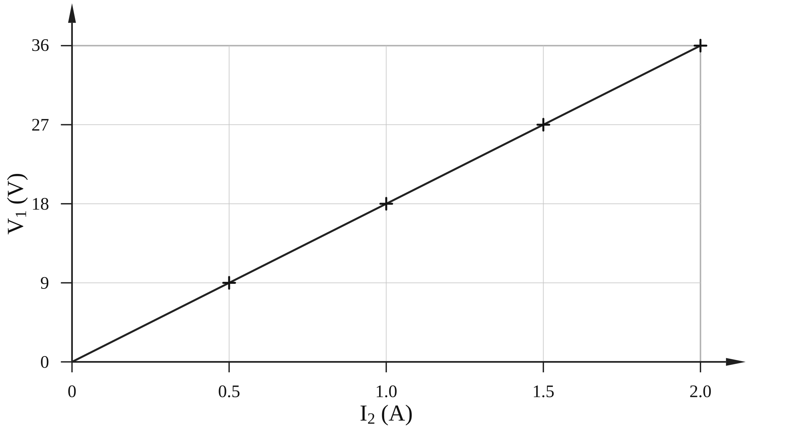

שאלה 3
בתרשים שלפניכם מתואר מעגל חשמלי. רכיבי המעגל הם: מקור מתח אידיאלי שהכא"מ שלו ε = 42V, נגד R שהתנגדותו קבועה אך ערכה אינו ידוע, נגד RMK שהתנגדותו משתנה, נורה L1 שרשום עליה 36V ו-72W, נורה L2 שרשום עליה 6V וערך ההספק שלה נמחק, ותילים אידיאליים.

הנגד R נבחר כך שבכל המצבים המתוארים בשאלה, עצמת הזרם הזורם דרך נורה L1 שווה לעצמת הזרם הזורם דרך נורה L2.
ההתנגדויות של הנורות L1 ו-L2 מסומנות RL1 ו-RL2, בהתאמה.
חשבו את עצמת הזרם הזורם דרך נורה L1 כאשר היא פועלת בהתאם לרישום שעליה. (5 נקודות)
נתון שקיים מצב שבו שתי הנורות פועלות בהתאם לרישום שעליהן. חשבו את התנגדות הנגד הקבוע R. (6 נקודות)
באותו מצב המתואר בסעיף ב, חשבו את ההתנגדות הפעילה של החלק PK בנגד המשתנה. (4 נקודות)
נסמן ב-I2 את עוצמת הזרם דרך נורה L2, וב-V1 את המתח על נורה L1. בטאו את V1 כפונקציה של I2 והפרמטרים R, RL2. (7 נקודות)
תלמידים במעבדת פיזיקה הרכיבו את המעגל החשמלי המתואר. הם שינו כמה פעמים את מיקום המגע P על פני הנגד המשתנה, ובכל פעם מדדו את עוצמת הזרם דרך נורה L2 באמצעות מד-זרם ואת המתח על נורה L1 באמצעות מד-מתח. מן המדידות התקבל הגרף שלפניכם.

היעזרו בשיפוע הגרף ובתשובותיכם לסעיפים הקודמים, וחשבו את ערך ההספק של נורה L2, שרישומו נמחק. (7 נקודות)
לאחר מכן קבעו התלמידים את המגע P בנקודה K, והחליפו את מקור המתח במקור מתח לא אידיאלי שהכא"מ שלו ε1 = 48V. במקרה זה שתי הנורות פועלות בהתאם לרישום שעליהן.
חשבו את נצילות המעגל. (4.33 נקודות)